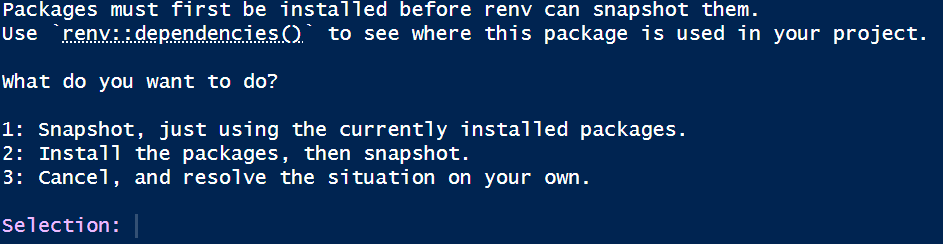
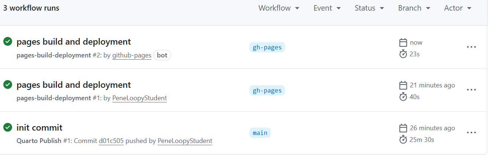

Checklist: Publish a Quarto Dashboard to GitHub
Complete these Tasks First
TipWhat students need before starting
This section ensures everyone has the correct software and accounts before beginning to publish a dashboard.
Download and Install Software
Create a GitHub Account
TipI recommend Gmail
I have done this multiple times using different gmail accounts to create multiple GitHub accounts and the process has been straightforward.
Generate a Personal Access Token (PAT)
WarningImportant
According to AI: GitHub no longer accepts passwords for Git operations; a Personal Access Token (PAT) is required instead.
Despite the statement above, I have been able to sign-in with a password.
I recommend saving the PAT as a precaution and keeping it handy.
I did not need my PAT when I added a new GitHub account to my GitHub Desktop but you might.
Add GitHub account/PAT to GitHub Desktop
Create and Render a Quarto Website
TipDashboard Website will be Incomplete until Lecture 27
- This checklist will help you create and publish your stock dashboard.
- Before Lecture 27 you will simply create the framework.
- In Lecture 27, I will provide the code and text to everyone in class to complete dashboard.
Create a New Quarto Website Project in RStudio
Modify Project as Follows:
-
- Replace files in your destination folder.
- Replace files in your destination folder.
Update renv
-
- This process will take time.

- This process will take time.
TipThe
renv update needs to be repeated periodically.
renvis a software ‘bubble’ within your software.
- As you expand your project or the packages are updated, the above Update
renvsteps will need to be repeated. - If you see the message
The project is out-of-sync -- use renv::status() for details., repeat the Updaterenvprocess.
Render Incomplete Dashboard
-
- The
.htmlfile is located in the_sitefolder.
- This file will only have the last page.
- All code and instructions will be provided in Lecture 27.
- The
TipWhy render before publishing
- GitHub Pages needs the rendered HTML files to exist before deployment.
Publish Your Dashboard with GitHub Pages
Make an Initial Commit Using GitHub Desktop
Enable GitHub Pages
TipInitial publication is very very slow
- The first time you do this it will take about 20-30 minutes.
- You can watch the progress in action by clicking Actions → ‘init commit’ → build-deploy.
- When build-deploy is done, ’pages build and deployment will rerun automatically.

::: callout ### SUCCESS! Your Quarto website is now live on GitHub Pages. :::Finding Your Website
Updating Your Website
TipRepeat some steps from initial commit to update website.
- Project is setup to automatically update on GitHub one you push it.
-
- Eventually you will have multiple repos.
- Eventually you will have multiple repos.